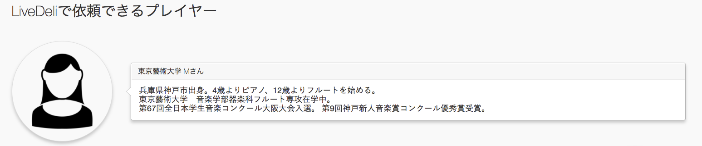
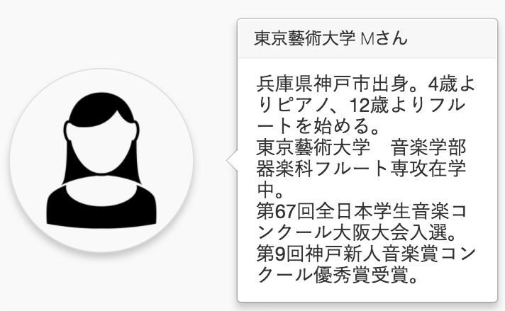

<!doctype html>
<html lang="ja">
  <head>
  
  
  <script>(function(w,d,s,l,i){w[l]=w[l]||[];w[l].push({'gtm.start':
  new Date().getTime(),event:'gtm.js'});var f=d.getElementsByTagName(s)[0],
  j=d.createElement(s),dl=l!='dataLayer'?'&l='+l:'';j.async=true;j.src=
  'https://www.googletagmanager.com/gtm.js?id='+i+dl;f.parentNode.insertBefore(j,f);
  })(window,document,'script','dataLayer','GTM-TKRT9JJ');</script>
  


  <meta charset="utf-8">
<title>[Rails]Bootstrapでレスポンシブな『吹き出し』を作る方法 - CPX</title>
<meta name="viewport" content="width=device-width, initial-scale=1">


  <link rel="apple-touch-icon" sizes="180x180" href="https://cpx.business/favicon/apple-touch-icon.png">
  <link rel="icon" type="image/png" sizes="32x32" href="https://cpx.business/favicon/favicon-32x32.png">
  <link rel="icon" type="image/png" sizes="16x16" href="https://cpx.business/favicon/favicon-16x16.png">
  <link rel="manifest" href="https://cpx.business/favicon/site.webmanifest">
  
    <link rel="mask-icon" href="https://cpx.business/favicon/safari-pinned-tab.svg" color="#ffffff">
    <link rel="shortcut icon" href="https://cpx.business/favicon/favicon.ico">
    <meta name="msapplication-config" content="/favicon/browserconfig.xml">
  
  <meta name="msapplication-TileColor" content="#ffffff">
  <meta name="theme-color" content="#ffffff">

<meta name="generator" content="Hugo 0.60.1" /><meta itemprop="name" content="[Rails]Bootstrapでレスポンシブな『吹き出し』を作る方法">
<meta itemprop="description" content="Bootstrapで簡単に人が話しているような吹き出しを作る方法を模索したのでまとめてみました">
<meta itemprop="datePublished" content="2017-01-17T00:00:00&#43;00:00" />
<meta itemprop="dateModified" content="2017-01-17T00:00:00&#43;00:00" />
<meta itemprop="wordCount" content="180">
<meta itemprop="image" content="https://cpx.business/img/header/make-responsive-speech-bubbles-with-bootstrap.png">


<meta itemprop="keywords" content="Rails,BootStrap3," /><meta property="og:title" content="[Rails]Bootstrapでレスポンシブな『吹き出し』を作る方法" />
<meta property="og:description" content="Bootstrapで簡単に人が話しているような吹き出しを作る方法を模索したのでまとめてみました" />
<meta property="og:type" content="article" />
<meta property="og:url" content="https://cpx.business/blog/make-responsive-speech-bubbles-with-bootstrap/" />
<meta property="og:image" content="https://cpx.business/img/header/make-responsive-speech-bubbles-with-bootstrap.png" />
<meta property="article:published_time" content="2017-01-17T00:00:00+00:00" />
<meta property="article:modified_time" content="2017-01-17T00:00:00+00:00" />
<meta name="twitter:card" content="summary_large_image"/>
<meta name="twitter:image" content="https://cpx.business/img/header/make-responsive-speech-bubbles-with-bootstrap.png"/>

<meta name="twitter:title" content="[Rails]Bootstrapでレスポンシブな『吹き出し』を作る方法"/>
<meta name="twitter:description" content="Bootstrapで簡単に人が話しているような吹き出しを作る方法を模索したのでまとめてみました"/>
<meta name="twitter:site" content="@dach1_ken"/>
<link rel="stylesheet" href="https://cpx.business/css/bundle.min.122bf077d53f56b1f764db5a8c387dd81587f604dbf07bbf3f86a62b06e00ca9.css" integrity="sha256-Eivwd9U/VrH3ZNtajDh92BWH9gTb8Hu/P4amKwbgDKk=">
        <link rel="stylesheet" href="https://cpx.business/css/add-on.css">
</head>

  <body>
    

  
  <noscript><iframe src="https://www.googletagmanager.com/ns.html?id=GTM-TKRT9JJ"
  height="0" width="0" style="display:none;visibility:hidden"></iframe></noscript>
  


<header id="site-header">
  <nav id="site-nav">
    <h1 class="nav-title">
      <a href="https://cpx.business/">
        
          CPX
        
      </a>
    </h1>
    <menu id="site-nav-menu" class="flyout-menu">
      
        
          
          
            <a href="https://cpx.business/" class="link"><i class='fa fa-home'></i> Home</a>
          
        
      
        
          
          
            <a href="https://cpx.business/about/" class="link"><i class='far fa-id-card'></i> About</a>
          
        
      
        
          
          
            <a href="https://cpx.business/blog/" class="link"><i class='far fa-newspaper'></i> Blog</a>
          
        
      
        
          
          
            <a href="https://cpx.business/categories/" class="link"><i class='fas fa-sitemap'></i> Categories</a>
          
        
      
      <a href="#share-menu" class="share-toggle"><i class="fas fa-share-alt">&nbsp;</i>Share</a>
      
    </menu>
    
    <a href="#share-menu" class="share-toggle"><i class="fas fa-share-alt fa-2x">&nbsp;</i></a>
    
    <a href="#site-nav" class="nav-toggle"><i class="fas fa-bars fa-2x"></i></a>
  </nav>
  
  
    <menu id="share-menu" class="flyout-menu">
      <h1>Share Post</h1>
      


  
    
    <a href="//twitter.com/share?text=%5bRails%5dBootstrap%e3%81%a7%e3%83%ac%e3%82%b9%e3%83%9d%e3%83%b3%e3%82%b7%e3%83%96%e3%81%aa%e3%80%8e%e5%90%b9%e3%81%8d%e5%87%ba%e3%81%97%e3%80%8f%e3%82%92%e4%bd%9c%e3%82%8b%e6%96%b9%e6%b3%95&amp;url=https%3a%2f%2fcpx.business%2fblog%2fmake-responsive-speech-bubbles-with-bootstrap%2f" target="_blank" rel="noopener" class="share-btn twitter">
        <i class="fab fa-twitter"></i><p>&nbsp;Twitter</p>
      </a>
  

  
      <a href="//www.facebook.com/sharer/sharer.php?u=https%3a%2f%2fcpx.business%2fblog%2fmake-responsive-speech-bubbles-with-bootstrap%2f" target="_blank" rel="noopener" class="share-btn facebook">
        <i class="fab fa-facebook"></i><p>&nbsp;Facebook</p>
        </a>
  

  
    <a href="//www.reddit.com/submit?url=https%3a%2f%2fcpx.business%2fblog%2fmake-responsive-speech-bubbles-with-bootstrap%2f&amp;title=%5bRails%5dBootstrap%e3%81%a7%e3%83%ac%e3%82%b9%e3%83%9d%e3%83%b3%e3%82%b7%e3%83%96%e3%81%aa%e3%80%8e%e5%90%b9%e3%81%8d%e5%87%ba%e3%81%97%e3%80%8f%e3%82%92%e4%bd%9c%e3%82%8b%e6%96%b9%e6%b3%95" target="_blank" rel="noopener" class="share-btn reddit">
          <i class="fab fa-reddit-alien"></i><p>&nbsp;Reddit</p>
        </a>
  

  
        <a href="//www.linkedin.com/shareArticle?url=https%3a%2f%2fcpx.business%2fblog%2fmake-responsive-speech-bubbles-with-bootstrap%2f&amp;title=%5bRails%5dBootstrap%e3%81%a7%e3%83%ac%e3%82%b9%e3%83%9d%e3%83%b3%e3%82%b7%e3%83%96%e3%81%aa%e3%80%8e%e5%90%b9%e3%81%8d%e5%87%ba%e3%81%97%e3%80%8f%e3%82%92%e4%bd%9c%e3%82%8b%e6%96%b9%e6%b3%95" target="_blank" rel="noopener" class="share-btn linkedin">
            <i class="fab fa-linkedin"></i><p>&nbsp;LinkedIn</p>
          </a>
  

  
        <a href="//www.pinterest.com/pin/create/button/?url=https%3a%2f%2fcpx.business%2fblog%2fmake-responsive-speech-bubbles-with-bootstrap%2f&amp;description=%5bRails%5dBootstrap%e3%81%a7%e3%83%ac%e3%82%b9%e3%83%9d%e3%83%b3%e3%82%b7%e3%83%96%e3%81%aa%e3%80%8e%e5%90%b9%e3%81%8d%e5%87%ba%e3%81%97%e3%80%8f%e3%82%92%e4%bd%9c%e3%82%8b%e6%96%b9%e6%b3%95" target="_blank" rel="noopener" class="share-btn pinterest">
          <i class="fab fa-pinterest-p"></i><p>&nbsp;Pinterest</p>
        </a>
  

  
        <a href="mailto:?subject=Check out this post by Kenji%20Adachi&amp;body=https%3a%2f%2fcpx.business%2fblog%2fmake-responsive-speech-bubbles-with-bootstrap%2f" target="_blank" class="share-btn email" data-proofer-ignore>
          <i class="fas fa-envelope"></i><p>&nbsp;Email</p>
        </a>
  


    </menu>
  
</header>

    <div id="wrapper">
      <section id="site-intro">
  <a href="https://cpx.business/"></a>
  
  <main>
    <p>ロキソニンとカフェインからこれらの記事は錬成されています</p>
  </main>
  
</section>

      <main id="site-main">
        <article class="post">
  <header>
  <div class="title">
    
        <h2><a href="https://cpx.business/blog/make-responsive-speech-bubbles-with-bootstrap/">[Rails]Bootstrapでレスポンシブな『吹き出し』を作る方法</a></h2>
    
    
        <p>Bootstrapで簡単に人が話しているような吹き出しを作る方法を模索したのでまとめてみました</p>
    
</div>
  <div class="meta">
    <time class="published" datetime="2017-01-17 00:00:00 &#43;0000 UTC">
      2017-01-17
    </time>
    <span class="author">Kenji Adachi</span>
    
      <p>1 分で読めます</p>
    
  </div>
</header>

  <section id="socnet-share">
    


  
    
    <a href="//twitter.com/share?text=%5bRails%5dBootstrap%e3%81%a7%e3%83%ac%e3%82%b9%e3%83%9d%e3%83%b3%e3%82%b7%e3%83%96%e3%81%aa%e3%80%8e%e5%90%b9%e3%81%8d%e5%87%ba%e3%81%97%e3%80%8f%e3%82%92%e4%bd%9c%e3%82%8b%e6%96%b9%e6%b3%95&amp;url=https%3a%2f%2fcpx.business%2fblog%2fmake-responsive-speech-bubbles-with-bootstrap%2f" target="_blank" rel="noopener" class="share-btn twitter">
        <i class="fab fa-twitter"></i><p>&nbsp;Twitter</p>
      </a>
  

  
      <a href="//www.facebook.com/sharer/sharer.php?u=https%3a%2f%2fcpx.business%2fblog%2fmake-responsive-speech-bubbles-with-bootstrap%2f" target="_blank" rel="noopener" class="share-btn facebook">
        <i class="fab fa-facebook"></i><p>&nbsp;Facebook</p>
        </a>
  

  
    <a href="//www.reddit.com/submit?url=https%3a%2f%2fcpx.business%2fblog%2fmake-responsive-speech-bubbles-with-bootstrap%2f&amp;title=%5bRails%5dBootstrap%e3%81%a7%e3%83%ac%e3%82%b9%e3%83%9d%e3%83%b3%e3%82%b7%e3%83%96%e3%81%aa%e3%80%8e%e5%90%b9%e3%81%8d%e5%87%ba%e3%81%97%e3%80%8f%e3%82%92%e4%bd%9c%e3%82%8b%e6%96%b9%e6%b3%95" target="_blank" rel="noopener" class="share-btn reddit">
          <i class="fab fa-reddit-alien"></i><p>&nbsp;Reddit</p>
        </a>
  

  
        <a href="//www.linkedin.com/shareArticle?url=https%3a%2f%2fcpx.business%2fblog%2fmake-responsive-speech-bubbles-with-bootstrap%2f&amp;title=%5bRails%5dBootstrap%e3%81%a7%e3%83%ac%e3%82%b9%e3%83%9d%e3%83%b3%e3%82%b7%e3%83%96%e3%81%aa%e3%80%8e%e5%90%b9%e3%81%8d%e5%87%ba%e3%81%97%e3%80%8f%e3%82%92%e4%bd%9c%e3%82%8b%e6%96%b9%e6%b3%95" target="_blank" rel="noopener" class="share-btn linkedin">
            <i class="fab fa-linkedin"></i><p>&nbsp;LinkedIn</p>
          </a>
  

  
        <a href="//www.pinterest.com/pin/create/button/?url=https%3a%2f%2fcpx.business%2fblog%2fmake-responsive-speech-bubbles-with-bootstrap%2f&amp;description=%5bRails%5dBootstrap%e3%81%a7%e3%83%ac%e3%82%b9%e3%83%9d%e3%83%b3%e3%82%b7%e3%83%96%e3%81%aa%e3%80%8e%e5%90%b9%e3%81%8d%e5%87%ba%e3%81%97%e3%80%8f%e3%82%92%e4%bd%9c%e3%82%8b%e6%96%b9%e6%b3%95" target="_blank" rel="noopener" class="share-btn pinterest">
          <i class="fab fa-pinterest-p"></i><p>&nbsp;Pinterest</p>
        </a>
  

  
        <a href="mailto:?subject=Check out this post by Kenji%20Adachi&amp;body=https%3a%2f%2fcpx.business%2fblog%2fmake-responsive-speech-bubbles-with-bootstrap%2f" target="_blank" class="share-btn email" data-proofer-ignore>
          <i class="fas fa-envelope"></i><p>&nbsp;Email</p>
        </a>
  


  </section>
  
  <a href="https://cpx.business/blog/make-responsive-speech-bubbles-with-bootstrap/" class="image featured">
    
      
    
  </a>


  <div class="content">
    <div id="toc">
      <h2>目次</h2>
      <nav id="TableOfContents">
  <ul>
    <li><a href="#heading">はじめに完成系を</a></li>
    <li><a href="#heading1">吹き出しの作り方</a></li>
    <li><a href="#heading2">レスポンシブな図の大きさの変え方</a></li>
    <li><a href="#heading3">図と並べる時に上下中央で揃える方法</a></li>
    <li><a href="#heading4">参考にしたサイト</a></li>
    <li><a href="#heading5">こちらもぜひご一緒に！</a></li>
  </ul>
</nav>
      <hr>
    </div>
    <section class="profile">
  <h4> この記事はこんな人が書いています</h2>
  
  <b>だちけん</b>
  <p>
    株式会社ムジカルを設立し、webアプリケーションの開発、webマーケティングを担当しています。<br><br>
    webアプリケーションでは、Vue.js、Ruby on Rails、Node.jsを用いての開発が得意です。<br><br>
    まったくゼロの状態から、要件定義を含めてシステム開発にとりかかったことで、幅広い知識を学習しながらよしなに進めるスキルを身につけました。<br><br>
    フリーランスとして、エンジニアリングやコンサルティングも行なっています。<br><br>
    詳しくは<a href="https://cpx.business/about">about</a>を読んでみてください。
  </p>
</section>
<hr>

    <p>2018/03/25追記：</p>
<p>こちら、Bootstrap3の話です。</p>
<p>Bootstrap4では、.row-centerなど実装されたようなので、もっと簡単に作成できますね。</p>
<p>詳しくは<a href="http://cccabinet.jpn.org/bootstrap4/">Bootstrap4移行ガイド</a>をみてください。</p>
<hr>
<p><strong>※こちらの記事は、Qiitaにて公開していたものを2020/03/01にこちらに移行しています。</strong></p>
<p>元記事は<a href="https://qiita.com/dach1_ken/items/02f7bd65e3a9f7c8d89a">こちら</a></p>
<p>※現在はこちらのページのURLのみ記載されています。</p>
<hr>
<p></p>
<p>Bootstrapを導入しているRailsアプリで、できるだけ簡単に人が話しているような吹き出しの作り方を模索したのでまとめてみました。</p>
<hr>
<h2 id="heading">はじめに完成系を</h2>
<p></p>
<p>このように、人が話しているような吹き出しの作り方をご紹介します。</p>
<p></p>
<p>画面を小さくしても、きちんとレスポンシブに変化してくれます。</p>
<p>ソースコードはこんな感じになっています。</p>
<pre><code class="language-html.erb" data-lang="html.erb">&lt;!-- sample.html.erb --&gt;

&lt;div class=&quot;row row-center&quot;&gt;
 &lt;div class=&quot;col-lg-2 col-md-3 col-sm-4 col-xs-5&quot;&gt;
  &lt;%= image_tag &quot;/images/woman.png&quot;, alt: &quot;東京藝術大学 Mさん&quot;, class:&quot;img-responsive img-circle reviews&quot; %&gt;
 &lt;/div&gt;
 &lt;div class=&quot;col-lg-10 col-md-9 col-sm-8 col-xs-7&quot;&gt;
  &lt;div class=&quot;popover right show&quot;style=&quot;position:relative; top=-90px; left=100px; max-width:100%; display:inline;&quot;&gt;
   &lt;div class=&quot;arrow&quot;&gt;&lt;/div&gt;
   &lt;h3 class=&quot;popover-title&quot;&gt;東京藝術大学 Mさん&lt;/h3&gt;
   &lt;div class=&quot;popover-content&quot;&gt;
    &lt;p&gt;兵庫県神戸市出身。4歳よりピアノ、12歳よりフルートをはじめる。&lt;br&gt;東京藝術大学　音楽学部器楽科フルート専攻在学中。&lt;br&gt;第67回全日本学生音楽コンクール大阪大会入選。第9回神戸新人音楽賞コンクール優秀賞受賞。&lt;/p&gt;
   &lt;/div&gt;
  &lt;/div&gt;
 &lt;/div&gt;
&lt;/div&gt;
</code></pre><div class="highlight"><pre style="color:#f8f8f2;background-color:#272822;-moz-tab-size:4;-o-tab-size:4;tab-size:4"><code class="language-scss" data-lang="scss"><span style="color:#75715e">// sample.scss
</span><span style="color:#75715e"></span>
<span style="color:#75715e">// 吹き出し用の設定
</span><span style="color:#75715e"></span><span style="color:#a6e22e">.</span><span style="color:#a6e22e">popover</span><span style="color:#a6e22e">.</span><span style="color:#a6e22e">show</span>{
  <span style="color:#f92672">margin-bottom</span><span style="color:#a6e22e">:</span> <span style="color:#f92672">10px</span>;
}

<span style="color:#75715e">// 横の画像用の設定
</span><span style="color:#75715e"></span><span style="color:#f92672">img</span><span style="color:#a6e22e">.</span><span style="color:#a6e22e">reviews</span> {
  <span style="color:#f92672">margin-bottom</span><span style="color:#a6e22e">:</span> <span style="color:#f92672">10px</span>;
  <span style="color:#f92672">box-shadow</span><span style="color:#a6e22e">:</span> <span style="color:#f92672">0</span> <span style="color:#f92672">5px</span> <span style="color:#f92672">10px</span> <span style="color:#f92672">rgba</span><span style="color:#f92672">(</span><span style="color:#f92672">0</span><span style="color:#f92672">,</span> <span style="color:#f92672">0</span><span style="color:#f92672">,</span> <span style="color:#f92672">0</span><span style="color:#f92672">,</span> <span style="color:#f92672">0</span><span style="color:#a6e22e">.</span><span style="color:#a6e22e">2</span><span style="color:#f92672">)</span>;
}

<span style="color:#75715e">// 並んでいるものを上下中央で揃える設定
</span><span style="color:#75715e"></span><span style="color:#a6e22e">.</span><span style="color:#a6e22e">row-center</span>{
  <span style="color:#f92672">text-align</span><span style="color:#a6e22e">:</span> <span style="color:#f92672">center</span>;
  <span style="color:#f92672">letter-spacing</span><span style="color:#a6e22e">:</span> <span style="color:#f92672">-0</span><span style="color:#a6e22e">.</span><span style="color:#a6e22e">4em</span>;
}
<span style="color:#a6e22e">.</span><span style="color:#a6e22e">row-center</span> <span style="color:#f92672">&gt;</span> <span style="color:#f92672">[</span><span style="color:#f92672">class</span><span style="color:#f92672">*</span><span style="color:#f92672">=</span><span style="color:#e6db74">&#39;</span><span style="color:#e6db74">col-</span><span style="color:#e6db74">&#39;</span><span style="color:#f92672">]</span> {
  <span style="color:#f92672">display</span><span style="color:#a6e22e">:</span> <span style="color:#f92672">inline-block</span>;
  <span style="color:#f92672">letter-spacing</span><span style="color:#a6e22e">:</span> <span style="color:#f92672">0</span>;
  <span style="color:#f92672">vertical-align</span><span style="color:#a6e22e">:</span> <span style="color:#f92672">middle</span>;
  <span style="color:#f92672">float</span><span style="color:#a6e22e">:</span> <span style="color:#f92672">none</span> <span style="color:#f92672">!</span><span style="color:#f92672">important</span>;
}
</code></pre></div><p>これからできるだけ詳しくこのコードが何を書いているのか？を紹介していきます。</p>
<hr>
<h2 id="heading1">吹き出しの作り方</h2>
<p>これは、Bootstrapにある機能で簡単に作ることが可能です。</p>
<p>このページ(<a href="http://endoyuta.com/2013/09/30/twitter-bootstrap%E3%81%AE%E5%90%B9%E3%81%8D%E5%87%BA%E3%81%97/">twitter bootstrapの吹き出し</a>)を参考にしながら、上下左右向きの静的な吹き出しを作りましょう。</p>
<p>この吹き出しですが、本来modal的に表示するものなので、z-indexの値が異常に高く(確か1000)設定されています。</p>
<p>動くナビバー等を設定されている方はz-indexの値を上書きしておきましょう。</p>
<p>また、marginが設定されてないので、以下のように設定しておきましょう。</p>
<div class="highlight"><pre style="color:#f8f8f2;background-color:#272822;-moz-tab-size:4;-o-tab-size:4;tab-size:4"><code class="language-scss" data-lang="scss"><span style="color:#75715e">// sample.scss
</span><span style="color:#75715e"></span>
<span style="color:#75715e">// 吹き出し用の設定
</span><span style="color:#75715e"></span><span style="color:#a6e22e">.</span><span style="color:#a6e22e">popover</span><span style="color:#a6e22e">.</span><span style="color:#a6e22e">show</span>{
  <span style="color:#f92672">margin-bottom</span><span style="color:#a6e22e">:</span> <span style="color:#f92672">10px</span>;
}
</code></pre></div><hr>
<h2 id="heading2">レスポンシブな図の大きさの変え方</h2>
<p>これも基本的にBootstrapの機能だけで作れます。</p>
<ul>
<li><code>class:&quot;img-responsive&quot;</code>を<code>image_tag</code>に設定</li>
<li>画像、吹き出しを横に並べる場合は<code>col-xs-*</code>を足して12になるようにそれぞれを囲む<code>div</code>に設定(僕の場合はどのデバイスでもできるだけ綺麗なバランスで見られるよう、<code>col-sm-*</code>、<code>col-md-*</code>、<code>col-lg-*</code>のそれぞれを指定しています)</li>
</ul>
<p>また、こちらもmarginがまったく設定されていなく、影が吹き出しにしか無いのも変なので、以下のように設定しておきましょう。</p>
<div class="highlight"><pre style="color:#f8f8f2;background-color:#272822;-moz-tab-size:4;-o-tab-size:4;tab-size:4"><code class="language-scss" data-lang="scss"><span style="color:#75715e">// sample.scss
</span><span style="color:#75715e"></span>
<span style="color:#75715e">// 横の画像用の設定
</span><span style="color:#75715e"></span><span style="color:#f92672">img</span><span style="color:#a6e22e">.</span><span style="color:#a6e22e">reviews</span> {
  <span style="color:#f92672">margin-bottom</span><span style="color:#a6e22e">:</span> <span style="color:#f92672">10px</span>;
  <span style="color:#f92672">box-shadow</span><span style="color:#a6e22e">:</span> <span style="color:#f92672">0</span> <span style="color:#f92672">5px</span> <span style="color:#f92672">10px</span> <span style="color:#f92672">rgba</span><span style="color:#f92672">(</span><span style="color:#f92672">0</span><span style="color:#f92672">,</span> <span style="color:#f92672">0</span><span style="color:#f92672">,</span> <span style="color:#f92672">0</span><span style="color:#f92672">,</span> <span style="color:#f92672">0</span><span style="color:#a6e22e">.</span><span style="color:#a6e22e">2</span><span style="color:#f92672">)</span>;
</code></pre></div><hr>
<h2 id="heading3">図と並べる時に上下中央で揃える方法</h2>
<p>Bootstrapのグリッドシステムでは、rowの中身が横に並ぶ時には上揃えになってしまいます。</p>
<p>そこで、この設定を変更しておきましょう。</p>
<p>こちらは、このページ(<a href="https://www.riarise.com/coding/bootstrap-extends-center-grid/">簡単！Bootstrap拡張：センタリンググリッドシステム</a>)を参考にしました。</p>
<div class="highlight"><pre style="color:#f8f8f2;background-color:#272822;-moz-tab-size:4;-o-tab-size:4;tab-size:4"><code class="language-scss" data-lang="scss"><span style="color:#75715e">// sample.scss
</span><span style="color:#75715e"></span>
<span style="color:#75715e">// 並んでいるものを上下中央で揃える設定
</span><span style="color:#75715e"></span><span style="color:#a6e22e">.</span><span style="color:#a6e22e">row-center</span>{
  <span style="color:#f92672">text-align</span><span style="color:#a6e22e">:</span> <span style="color:#f92672">center</span>;
  <span style="color:#f92672">letter-spacing</span><span style="color:#a6e22e">:</span> <span style="color:#f92672">-0</span><span style="color:#a6e22e">.</span><span style="color:#a6e22e">4em</span>;
}
<span style="color:#a6e22e">.</span><span style="color:#a6e22e">row-center</span> <span style="color:#f92672">&gt;</span> <span style="color:#f92672">[</span><span style="color:#f92672">class</span><span style="color:#f92672">*</span><span style="color:#f92672">=</span><span style="color:#e6db74">&#39;</span><span style="color:#e6db74">col-</span><span style="color:#e6db74">&#39;</span><span style="color:#f92672">]</span> {
  <span style="color:#f92672">display</span><span style="color:#a6e22e">:</span> <span style="color:#f92672">inline-block</span>;
  <span style="color:#f92672">letter-spacing</span><span style="color:#a6e22e">:</span> <span style="color:#f92672">0</span>;
  <span style="color:#f92672">vertical-align</span><span style="color:#a6e22e">:</span> <span style="color:#f92672">middle</span>;
  <span style="color:#f92672">float</span><span style="color:#a6e22e">:</span> <span style="color:#f92672">none</span> <span style="color:#f92672">!</span><span style="color:#f92672">important</span>;
}
</code></pre></div><p>これで完成です。</p>
<p>今回は右に吹き出しがあるパターンを作りましたが、左にあるパターンも見たい場合は、<a href="https://www.livedeli.com/">LiveDeliのHP</a>をご覧ください。</p>
<hr>
<h2 id="heading4">参考にしたサイト</h2>
<ul>
<li><a href="http://cccabinet.jpn.org/bootstrap4/">Bootstrap4移行ガイド</a></li>
<li><a href="http://endoyuta.com/2013/09/30/twitter-bootstrap%E3%81%AE%E5%90%B9%E3%81%8D%E5%87%BA%E3%81%97/">twitter bootstrapの吹き出し</a></li>
<li><a href="https://www.riarise.com/coding/bootstrap-extends-center-grid/">簡単！Bootstrap拡張：センタリンググリッドシステム</a></li>
</ul>
<hr>
<h2 id="heading5">こちらもぜひご一緒に！</h2>
<ul>
<li><a href="../../blog/how-to-retain-the-information-of-bootstrap4-tab-using-js-cookie/">[Rails]js-cookie.jsを使ってbootstrap4のタブの情報を保持する</a></li>
<li><a href="../../blog/how-to-use-parsely-in-rails/">[Rails]動的なvalidationをParsleyと、Bootstrap4を使っておしゃれに実装する</a></li>
</ul>

  </div>
  <footer>
    <ul class="stats">
  
    
    
      <li class="categories">
        <ul>
          
            
            <li><a class="article-category-link" href="https://cpx.business/categories/rails">Rails</a></li>
          
        </ul>
      </li>
    
  
  
    
    
      <li class="tags">
        <ul>
          
            
            <li><a class="article-category-link" href="https://cpx.business/tags/rails">Rails</a></li>
          
            
            <li><a class="article-category-link" href="https://cpx.business/tags/bootstrap3">BootStrap3</a></li>
          
        </ul>
      </li>
    
  
</ul>

  </footer>
</article>

    <article class="post">
        <div id="disqus_thread"></div>
<script type="application/javascript">
    var disqus_config = function () {
    
    
    
    };
    (function() {
        if (["localhost", "127.0.0.1"].indexOf(window.location.hostname) != -1) {
            document.getElementById('disqus_thread').innerHTML = 'Disqus comments not available by default when the website is previewed locally.';
            return;
        }
        var d = document, s = d.createElement('script'); s.async = true;
        s.src = '//' + "dachiken" + '.disqus.com/embed.js';
        s.setAttribute('data-timestamp', +new Date());
        (d.head || d.body).appendChild(s);
    })();
</script>
<noscript>Please enable JavaScript to view the <a href="https://disqus.com/?ref_noscript">comments powered by Disqus.</a></noscript>
<a href="https://disqus.com" class="dsq-brlink">comments powered by <span class="logo-disqus">Disqus</span></a>
    </article>


<div class="pagination">
  
    <a href="https://cpx.business/blog/copy-the-staging-environment-on-heroku/" class="button"><div class="previous"><div>[Heroku]Heroku上に既存の本番環境からステージング環境を作成</div></div></a>
  
  
    <a href="https://cpx.business/blog/how-to-put-a-value-other-than-form-in-params/" class="button"><div class="next"><div>[Rails]paramsにform以外の値を入れたい！と思ってるあなたへ</div></div></a>
  
</div>


      </main>
      <section id="site-sidebar">
  
    <section id="recent-posts">
      <header>
        <h1>最近の投稿</h1>
      </header>
      
      <article class="mini-post">
        <section>
          
  <a href="https://cpx.business/blog/how-to-use-usecase-in-rails/" class="image featured">
    
      
    
  </a>


        </section>
        <header>
          <h1><a href="https://cpx.business/blog/how-to-use-usecase-in-rails/">[Rails]Usecaseクラスを上手に扱おう</a></h1>
          <time class="published" datetime="">2020-07-25</time>
        </header>
      </article>
      
      <article class="mini-post">
        <section>
          
  <a href="https://cpx.business/blog/how-to-use-json-rails-activerecord/" class="image featured">
    
      
    
  </a>


        </section>
        <header>
          <h1><a href="https://cpx.business/blog/how-to-use-json-rails-activerecord/">[Rails]MySQLのJSON型をActiveRecordで扱おう</a></h1>
          <time class="published" datetime="">2020-07-24</time>
        </header>
      </article>
      
      <article class="mini-post">
        <section>
          
  <a href="https://cpx.business/blog/how-to-use-eslint/" class="image featured">
    
      
    
  </a>


        </section>
        <header>
          <h1><a href="https://cpx.business/blog/how-to-use-eslint/">[Node.js]eslintことはじめ ~キレイなJSコードを担保しよう~</a></h1>
          <time class="published" datetime="">2020-05-31</time>
        </header>
      </article>
      
      <article class="mini-post">
        <section>
          
  <a href="https://cpx.business/blog/how-to-use-rspec/" class="image featured">
    
      
    
  </a>


        </section>
        <header>
          <h1><a href="https://cpx.business/blog/how-to-use-rspec/">[Rails]RSpecことはじめ ~使いやすい環境構築~</a></h1>
          <time class="published" datetime="">2020-05-31</time>
        </header>
      </article>
      
      <article class="mini-post">
        <section>
          
  <a href="https://cpx.business/blog/first-step-for-create-matching-system/" class="image featured">
    
      
    
  </a>


        </section>
        <header>
          <h1><a href="https://cpx.business/blog/first-step-for-create-matching-system/">マッチングシステム構築はじめの一歩 ざっくりシステム3パターン</a></h1>
          <time class="published" datetime="">2020-05-23</time>
        </header>
      </article>
      
      
        <a href="https://cpx.business/blog/" class="button">続きを見る</a>
      
    </section>
  

  
    
      <section id="categories">
        <header>
          <h1><a href="https://cpx.business/categories">カテゴリー</a></h1>
        </header>
        <ul>
          
            
          
          
          <li>
            
              <a href="https://cpx.business/categories/rails/">rails<span class="count">17</span></a>
            
          
          <li>
            
              <a href="https://cpx.business/categories/hugo/">hugo<span class="count">4</span></a>
            
          
          <li>
            
              <a href="https://cpx.business/categories/other/">other<span class="count">3</span></a>
            
          
          <li>
            
              <a href="https://cpx.business/categories/tools/">tools<span class="count">2</span></a>
            
          
          <li>
            
              <a href="https://cpx.business/categories/node.js/">node.js<span class="count">1</span></a>
            
          
          <li>
            
              <a href="https://cpx.business/categories/web%E3%83%9E%E3%83%BC%E3%82%B1/">webマーケ<span class="count">1</span></a>
            
          
          </li>
        </ul>
      </section>
    
  

  
</section>

      <footer id="site-footer">
  
      <ul class="socnet-icons">
        
        <li><a href="//github.com/kenjiadachi" target="_blank" rel="noopener" title="GitHub" class="fab fa-github"></a></li>


<li><a href="//facebook.com/DACH1KEN" target="_blank" rel="noopener" title="Facebook" class="fab fa-facebook"></a></li>


<li><a href="//instagram.com/dach1ken" target="_blank" rel="noopener" title="Instagram" class="fab fa-instagram"></a></li>

<li><a href="//twitter.com/dach1_ken" target="_blank" rel="noopener" title="Twitter" class="fab fa-twitter"></a></li>


      </ul>
  
  <p class="copyright">
    
      dachiken
    . <br>
    Theme: <a href='https://github.com/pacollins/hugo-future-imperfect-slim' target='_blank' rel='noopener'>Hugo Future Imperfect Slim</a><br>A <a href='https://html5up.net/future-imperfect' target='_blank' rel='noopener'>HTML5 UP port</a> | Powered by <a href='https://gohugo.io/' title='0.60.1' target='_blank' rel='noopener'>Hugo</a>
  </p>
</footer>
<a id="back-to-top" href="#" class="fas fa-arrow-up fa-2x"></a>

      <script src="https://cpx.business/js/highlight.pack.js"></script>
    <script>hljs.initHighlightingOnLoad();</script><script src="https://cpx.business/js/bundle.min.e0c399b948d3cf5c3a5e3badb94023d0b064a19ac39fd8cd79fb9f57fa4d1091.js" integrity="sha256-4MOZuUjTz1w6XjutuUAj0LBkoZrDn9jNefufV/pNEJE="></script>
    <script src="https://cpx.business/js/add-on.js"></script>
    </div>
  </body>
</html>
